물류관리사-2교시 (2013-06-15 기출문제)
1과목: 보관하역론
1. 보관에 관한 설명으로 옳지 않은 것은?
- 단순 저장기능 중심에서 라벨링, 재포장 등 유통 지원기능이 강화되고 있다.
- 생산과 판매의 조정 및 완충기능을 수행한다.
- 수요변동의 폭이 적은 물품에 대해 안전재고 수준을 높이고 있다.
- 운영효율성을 향상시키기 위해 물류정보시스템의 사용이 증가하고 있다.
- 다품종 소량화, 소량 다빈도화, 리드타임 단축 등 시장환경 변화에 신속하게 대응해야 한다.
(정답률: 알수없음)

2. 보관의 원칙에 관한 설명으로 옳지 않은 것은?
- 선입선출의 원칙이란 먼저 입고한 물품을 먼저 출고하는 것으로 제품 수명주기(Product Life Cycle)가 짧은 경우에 많이 적용된다.
- 위치표시의 원칙이란 물품의 보관장소에 특정한 기호를 사용하여 위치를 표시하는 것으로 입출고 작업의 효율성을 높일 수 있다.
- 회전대응보관의 원칙이란 입출고 빈도의 정도에 따라 물품의 보관장소를 결정하는 것으로 입출고 빈도가 높은 물품은 출입구로부터 가까운 장소에 보관한다.
- 중량특성의 원칙이란 물품의 중량에 따라 보관장소의 출입구를 기준으로 한 거리와 높낮이를 결정하는 것이다.
- 형상특성의 원칙이란 표준화된 물품은 형상에 따라 보관하고 표준화되지 않은 물품은 랙(Rack)에 보관하는 것이다.
(정답률: 알수없음)
3. 단일물품을 생산하는 A 회사는 신규 물류센터에 대한 두 가지 운영방식을 검토하고 있다. 첫째는 수요지 인근에 단일 대규모 물류센터를 운영하는 집중형 방식이고, 둘째는 각 수요지별로 소규모 물류센터를 운영하는 분산형 방식이다. 동일한 여건에서 운영된다고 가정할 때 두 가지 운영방식의 비교에 관한 설명으로 옳지 않은 것은?
- 집중형 방식이 생산지에서 수요지까지의 총운송비용이 적다.
- 분산형 방식이 고객과의 거리가 가까워 고객요구 대응이 유리하다.
- 분산형 방식이 물류센터의 총운영비용이 많다.
- 물류센터별 고객서비스 수준이 동일하다면 분산형 방식의 안전재고 수준이 낮다.
- 집중형 방식은 관리공간이 한 곳으로 집중되어 정보와 현품의 대응이 용이하다.
(정답률: 알수없음)
4. 다음 표는 물류센터 하역작업의 연속된 5개 공정별 작업시간이다. 공정개선 후 공정효율(Balance Efficiency)을 80%로 만들기 위해서는 애로공정의 작업시간을 몇 분 줄여야 하는가? (단, 소수점 첫째자리에서 반올림 하시오.)
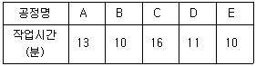
- 4분
- 5분
- 6분
- 7분
- 8분
(정답률: 알수없음)
5. 물류단지시설에 관한 설명으로 옳지 않은 것은?
- 데포(Depot)는 제조업체가 원료나 완성품을 쌓아 두거나 유통업체가 배송 전 단계로 재고품을 비축 또는 다음 단계의 배송센터로 제품을 이전시키기 전에 일시 보관하는 시설이다.
- 물류터미널은 화물의 집하, 하역 및 이와 관련된 분류, 포장, 보관, 가공, 조립 또는 통관 등에 필요한 기능을 갖춘 시설이다.
- 복합물류터미널은 두 종류 이상의 운송수단간의 연계운송을 수행할 수 있는 시설이다.
- 공동집배송센터는 여러 유통사업자 또는 제조업자가 공동으로 사용할 수 있도록 집배송시설 및 부대업무시설이 설치되어 있는 시설이다.
- 내륙컨테이너기지(ICD)는 주로 항만터미널과 내륙운송수단과의 연계가 편리한 산업지역에 위치한 컨테이너 장치장으로 컨테이너 화물의 통관기능까지 갖춘 시설이다.
(정답률: 알수없음)
6. A 공장에서 신설 물류센터를 경유하여 B, C, D 수요지에 제품을 공급하고자 한다. 공장과 수요지의 위치, 수요량, 수송단가가 다음 표와 같다면 총수송비를 최소로 하는 신설 물류센터의 입지를 무게중심법을 이용하여 구한 좌표는? (단, 소수점 첫째자리에서 반올림 하시오.)
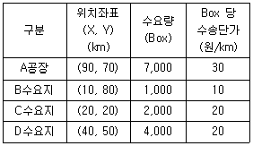
- (68, 60)
- (68, 49)
- (77, 60)
- (77, 49)
- (52, 64)
(정답률: 알수없음)
7. 투빈시스템(Two Bin System)에 관한 설명으로 옳지 않은 것은?
- 부품의 재고관리에 많이 사용되는 기법으로 선입선출(FIFO)을 지킬 수 있는 가능성이 높아진다.
- 주문량이 중심이 되므로 Q시스템이라고도 부르며, 계속적인 재고수준 조사를 통하여 리드타임 기간의 수요변동에 대비해야 한다.
- 흐름랙(Flow Rack)을 사용하면 통로공간의 낭비를 줄일 수 있어 공간효율성이 뛰어나며, 저장 및 반출 작업을 단순화시킬 수 있다.
- 투빈시스템을 사용하기 위해서는 한가지 품목에 대하여 두 개의 저장공간이 필요하다.
- 조달기간이 짧은 저가 품목에 대하여 많이 사용하는 방법이다.
(정답률: 알수없음)
8. 물류거점 계획을 위한 기본조건에 관한 설명으로 옳은 것을 모두 고른 것은?
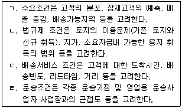
- ㄱ, ㄴ, ㄷ
- ㄱ, ㄴ, ㄷ, ㄹ
- ㄱ, ㄴ, ㄹ
- ㄱ, ㄷ, ㄹ
- ㄴ, ㄷ, ㄹ
(정답률: 알수없음)
9. 창고의 레이아웃(Layout) 설계에서 고려해야 할 사항으로 옳지 않은 것은?
- 화물, 운반기기 및 작업자 등의 흐름 직진성을 고려해야 한다.
- 화물 및 작업자 등의 역방향 흐름을 최소화해야 한다.
- 화물 취급횟수가 증가하도록 해야 한다.
- 화물의 흐름과정에서 높낮이 차이의 크기를 줄여야 한다.
- 운반기기, 랙(Rack) 등의 모듈화를 고려해야 한다.
(정답률: 알수없음)
10. 물류센터의 입지결정을 위한 방법에 관한 설명으로 옳지 않은 것은?
- 총비용 비교법은 대안별로 투자금액과 물류비용, 관리비용을 산출하고 총비용이 최소가 되는 대안을 선택하는 방법이다.
- 톤-킬로법은 일정한 물동량(입고량 또는 출고량)의 고정비와 변동비를 산출하고 그 합을 비교하여 물동량에 따른 총비용이 최소가 되는 대안을 선택하는 방법이다.
- 무게중심법은 물류센터를 기준으로 고정된 공급지(공장 등)에서 물류센터까지의 수송비와 물류센터에서 수요지(각 지점, 배송처 등)까지의 수송비를 구하여 그 합이 최소가 되는 장소를 입지로 선택하는 방법이다.
- 요소분석법은 고려하고 있는 입지 요인(접근성, 지역 환경, 노동력, 환경성 등)에 주관적으로 가중치를 설정하여 각 요인의 평가점수를 합산하는 방법이다.
- 브라운깁슨(Brown&Gibson)법은 입지 결정에 있어서 양적 요인과 질적 요인을 함께 고려할 수 있도록 평가기준을 필수적 기준, 객관적 기준, 주관적 기준으로 구분하여 평가하는 방법이다.
(정답률: 알수없음)
11. 재고관리 지표에 관한 설명으로 옳은 것은?
- 서비스율은 전체 수주량에 대한 납기내 납품량의 비율이다.
- 백오더율은 전체 주문에 대한 접수 마감후 신청된 주문의 비율이다.
- 재고회전율은 연간 평균 재고량을 입출고횟수로 나눈 값이다.
- 재고회전기간은 재고회전율을 수요대상기간으로 나눈 값이다.
- 평균재고액은 기말재고액에서 기초재고액을 뺀 값이다.
(정답률: 알수없음)
12. 자동창고시스템에서 단위화물을 처리하는 S/R(Storage/Retrieval) 장비의 단일명령(Single Command) 수행시간은 2분, 이중명령(Dual Command) 수행시간은 3.2분이다. 평균 가동율은 84%이고, 단일명령 횟수가 이중명령 횟수의 2배 라면 S/R 장비 1대의 시간당 처리 개수는? (단, 소수점 첫째자리에서 반올림 하시오.)
- 14개
- 21개
- 28개
- 35개
- 42개
(정답률: 50%)
13. 낱개피킹시스템 중 작업자이동형 시스템에서 사용하는 설비가 아닌 것은?
- Bin Shelving
- Storage Drawer
- Mezzanine
- Carousel
- Mobile Storage
(정답률: 알수없음)
14. 다음 작업조건의 물류센터에서 필요한 출하도크의 길이는? (단, 소수점 첫째자리에서 반올림 하시오.)
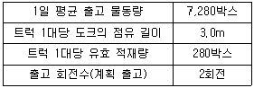
- 3m
- 26m
- 39m
- 52m
- 78m
(정답률: 알수없음)
15. 자가창고와 비교할 때 영업창고의 장점으로 옳지 않은 것은?
- 창고의 건설자금이 불필요하여 재무유동성이 향상된다.
- 보관관련 비용에 대한 지출을 명확히 알 수 있다.
- 전문가에 의한 수불관리가 이루어지기 때문에 관리가 안전하다.
- 시설변경의 탄력성이 높다.
- 입지선정이 용이하다.
(정답률: 알수없음)
16. 물류센터의 업무에 관한 설명으로 옳지 않은 것은?
- 입고는 입고제품의 수량 및 상태이상 유무에 대한 검수 등을 포함한다.
- 보관은 입고구역으로부터 검수된 제품을 파렛트랙에 저장하는 것이며, 보관위치는 품질에 따라 정해져야 한다.
- 피킹은 출고지시에 따라 파렛트, 박스, 낱개 단위별로 이루어지며 일괄피킹, 순차피킹 등의 방법이 있다.
- 분류는 파렛트, 박스, 낱개 단위별로 피킹된 제품을 배송처별로 구분하는 활동으로 자동컨베이어, DPS(Digital Picking System), 분류자동화 기기 등의 설비를 이용한다.
- 유통가공은 가격표 부착, 바코드 부착, 포장 등의 작업을 수행한다.
(정답률: 알수없음)
17. A 제품의 연간 수요량이 1,000개이고 제품단가는 1,000원이며, 단위재고유지비용은 제품단가의 10%이다. 연간 수요량이 2,000개로 증가하고, 단위재고유지비용이 제품단가의 80%로 증가하면 증가하기 전과 비교할 때 EOQ는 얼마나 변동되는가?
- 변동없음
- 50% 증가
- 50% 감소
- 100% 증가
- 100% 감소
(정답률: 알수없음)
18. EOQ 모형과 EPQ 모형에 관한 설명으로 옳은 것을 모두 고른 것은?
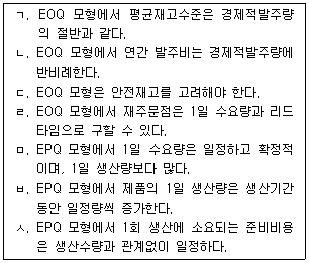
- ㄱ, ㄴ, ㄹ, ㅅ
- ㄱ, ㄷ, ㄹ, ㅅ
- ㄱ, ㄷ, ㅁ, ㅂ
- ㄴ, ㄹ, ㅁ, ㅂ
- ㄴ, ㄷ, ㅁ, ㅅ
(정답률: 알수없음)
19. 다음의 관리시스템에 관한 설명으로 옳지 않은 것은?
- JIT는 필요한 부품을 필요한 수량만큼 필요한 시기에 생산하여 낭비 요소를 제거한다.
- JIT Ⅱ는 JIT와 기본적으로 같으나 공급업체와 계약관계가 아닌 상호 협력관계를 전제로 한다.
- MRP는 제품생산에 필요한 원자재, 부분품, 공산품, 조립품 등의 소요량 및 소요시기를 역산해서 조달계획을 수립한다.
- MRP Ⅱ는 재고관리, 생산현장관리, 자재소요관리 등의 생산자원계획과 통제과정에 있는 여러 기능들이 하나의 단일시스템에 통합되어 생산관련 자원투입의 최적화를 추구한다.
- SCM은 기업활동을 위해 필요한 기업 내의 모든 인적, 물적자원을 통합적으로 관리한다.
(정답률: 알수없음)
20. 3가지 품목의 제품을 보관하고자 하는 창고의 향후 6개월간 품목별 월평균 소요 단위공간이 다음 표와 같이 예상된다. 지정저장(Dedicated Storage)방식과 임의저장(Randomized Storage)방식으로 산정된 소요공간에 관한 설명으로 옳은 것은?
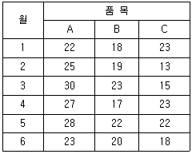
- 임의저장방식이 지정저장방식보다 4 단위공간만큼 적게 소요된다.
- 지정저장방식이 임의저장방식보다 4 단위공간만큼 적게 소요된다.
- 임의저장방식이 지정저장방식보다 5 단위공간만큼 적게 소요된다.
- 지정저장방식이 임의저장방식보다 5 단위공간만큼 적게 소요된다.
- 임의저장방식과 지정저장방식의 소요공간은 동일하다.
(정답률: 31%)
21. A 제품의 출하량은 정규분포를 따르며, 1일 평균 수요는 50개, 1일 수요의 표준편차는 40개이고, 평균 조달기간은 4일이다. 제품수요에 대한 서비스 수준을 99%(안전계수 z=2.33)로 유지하기 위한 재주문점은? (단, √2 = 1.414, √3 = 1.732, √4 = 2 이며, 소수점첫째자리에서 반올림 하시오.)
- 144개
- 232개
- 312개
- 386개
- 413개
(정답률: 알수없음)
22. 다음 표와 같이 과거 실적치가 주어졌을 때, 가중이동평균법(Weighted Moving Average)으로 예측한 5월의 수요량은? (단, 2월 가중치는 0.1, 3월 가중치는 0.3, 4월가중치는 0.6이며, 소수점 첫째자리에서 반올림 하시오.)
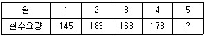
- 166
- 170
- 174
- 178
- 182
(정답률: 알수없음)
23. 재고관리 및 통제에 관한 설명으로 옳지 않은 것은?
- 정량발주법은 현재의 재고상태를 파악하여 재고량이 재주문점에 도달하면 미리 설정된 일정량을 주문하는 시스템이다.
- ABC 재고관리에서 A품목은 매출액이 매우 적어서 가능한 노력이 적게 드는 관리방법을 택하며, B품목은 매출액이 비교적 적지만 품목이 많으므로 정량발주시스템 적용이 바람직하고, C품목은 매출액이 높은 품목으로 정기발주시스템 이용이 적합하다.
- 정기발주법은 재고량이 특정수준에 이르도록 적정량을 일정기간마다 재주문하는 방법이다.
- 안전재고는 수요의 변동, 수요의 지연, 공급의 불확실성 등으로 품절이 발생하여 계속적인 공급중단 사태를 방지하기 위한 예비목적의 재고량이다.
- 조달기간(Lead Time)은 발주 후 창고에 주문품목들이 들어오기까지의 기간으로 기간이 짧을수록 재고수준은 낮아진다.
(정답률: 알수없음)
24. 다음 표는 임의의 부품에 대해 총소요량, 예정입고량, 기초재고가 주어진 MRP 계획표의 일부이다. 부품에 대한 리드타임(Lead Time)이 1주이고 주문단위(Lot Size)가 L4L(Lot for Lot)으로 결정된다면, 2주, 3주, 4주의 예상가용량의 합은?
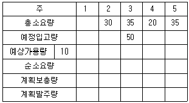
- 10
- 15
- 20
- 25
- 30
(정답률: 알수없음)
25. 포크리프트의 평균 적재운반거리는 250m, 평균 공차이동거리는 150m이다. 적재와 하역시간은 각각 30초, 속도는 3km/시간, 가동율은 0.9일 때 하역장에서 1분당 1회의 운반을 위해 필요한 포크리프트의 총 소요대수는? (단, 소수점 첫째자리에서 반올림 하시오.)
- 7대
- 8대
- 9대
- 10대
- 11대
(정답률: 알수없음)
26. 하역작업에 관한 설명으로 옳지 않은 것은?
- 배닝(Vanning)은 컨테이너에서 물품을 끄집어내는 작업이다.
- 분류(Sorting)는 물품을 품종별, 고객별, 목적지별 등으로 나누는 작업이다.
- 쌓아올림(Stacking)은 물품을 보관시설 또는 장소로 이동시켜 정해진 위치와 형태로 쌓는 작업이다.
- 래싱(Lashing)은 물품을 고정시키는 작업이다.
- 피킹(Picking)은 보관장소에서 물품을 끄집어내는 작업이다.
(정답률: 알수없음)
27. 하역의 원칙에 관한 설명으로 옳지 않은 것은?
- 경제성의 원칙은 불필요한 하역작업을 줄이고 가장 경제적인 하역횟수로 하역이 이루어지도록 하는 원칙이다.
- 이동거리 및 시간의 최소화 원칙은 하역작업의 이동거리를 최소화하여 작업의 효율성을 증가시키는 원칙이다.
- 활성화의 원칙은 운반활성지수를 최대화하는 원칙으로 지표와 접점이 작을수록 활성지수는 높아진다.
- 기계화의 원칙은 인력작업을 기계작업으로 대체하는 원칙으로 하역작업의 효율성과 경제성을 증가시킨다.
- 중력이용의 원칙은 중력에 의한 하역이 화물의 파손을 일으킬 확률이 높으므로 화물을 견고하게 포장해야 하는 원칙이다.
(정답률: 알수없음)
28. 포크리프트 부착물의 명칭이 올바르게 연결된 것은?
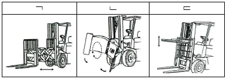
- ㄱ: 리치포크, ㄴ : 회전포크, ㄷ : 머니퓰레이터
- ㄱ: 푸셔, ㄴ : 회전포크, ㄷ : 머니퓰레이터
- ㄱ: 리치포크, ㄴ : 회전포크, ㄷ : 로드스태빌라이저
- ㄱ: 푸셔, ㄴ : 회전클램프, ㄷ : 로드스태빌라이저
- ㄱ: 리치포크, ㄴ : 회전클램프, ㄷ : 로드스태빌라이저
(정답률: 알수없음)
29. 다음은 항만하역장비의 종류 중 무엇에 관한 설명인가?
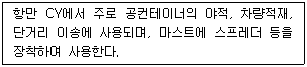
- 스트래들 캐리어(Straddle Carrier)
- 컨테이너 크레인(Container Crane)
- 스태커 크레인(Stacker Crane)
- 탑 핸들러(Top Handler)
- 트랜스퍼 크레인(Transfer Crane)
(정답률: 알수없음)
30. 유닛로드 시스템(Unit Load System)에 관한 설명으로 옳지 않은 것은?
- 하역작업의 혁신을 통해 수송합리화를 도모하기 위한 방안 중 하나이다.
- 호환성이 증대되어 다른 회사와 공동으로 파렛트를 사용하는 등 시스템 연계성을 높일 수 있다.
- 화물 취급단위에 대한 단위화와 표준화를 통하여 기계하역을 용이하게 하며 하역능력 향상과 비용절감의 이점이 있다.
- 우리나라에서는 일관수송용 평파렛트에 관한 KS 규격이 제정되어 있다.
- 세계의 모든 나라가 T11형 파렛트를 표준으로 삼고 있기 때문에 국제교역 시 일관수송을 위해 T11형 파렛트를 사용하여야 한다.
(정답률: 알수없음)
31. 파렛트 풀 시스템(Pallet Pool System)에 관한 설명으로 옳지 않은 것은?
- 파렛트 풀 시스템의 성공적인 운영을 위해서는 파렛트 규격이 표준화되어야 한다.
- 파렛트 풀 시스템을 운영하면 수송 후 공파렛트 회수문제를 해결할 수 있다.
- 교환방식 풀 시스템은 이용자가 가까운 데포(Depot)에서 파렛트를 빌려서 사용하는 방식이다.
- 기업단위 파렛트 풀 시스템은 기업이 자사 파렛트를 파렛트 대여 전문회사로부터 일괄 대여하여 자사 거래처의 유통단계까지 독점적으로 이용하는 것이다.
- 파렛트 풀 시스템을 통해 지역간 수급을 해결하고 계절적 수요에 효과적으로 대응할 수 있다.
(정답률: 알수없음)
32. 물류센터에서 사용하는 DAS(Digital Assorting System)와 DPS(Digital Picking System)에 관한 설명으로 옳지 않은 것은?
- DAS는 물품을 주문별로 분배하는 파종식이며, DPS는 주문별로 피킹하는 채취식으로 볼 수 있다.
- DPS는 소품종 다량화물 및 피킹빈도가 낮은 화물의 피킹에 유리하다.
- DAS는 보관장소와 주문별 분배장소가 별도로 필요하다.
- DPS는 품목 증가 및 변경에도 정확히 피킹할 수 있다.
- DPS는피킹의 신속성과정확성을향상시킬 수있다.
(정답률: 알수없음)
33. 분류시스템에 사용되는 방식에 관한 설명으로 옳지 않은 것은?
- 슬라이딩 슈 방식(Sliding Shoe Type)은 컨베이어에서 이동할 수 있는 슬랫으로 밀어서 분류하는 방식으로 충격이 크기 때문에 깨지기 쉬운 물건에는 사용할 수 없다.
- 틸팅 방식(Tilting Type)은 컨베이어를 주행하는 트레이, 슬라이드 등에 물품을 적재하였다가 분류되는 순간에 트레이, 슬라이드가 기울어지는 방식으로 고속처리가 가능하지만 중력에 의한 파손품이 발생될 수 있다.
- 팝업 방식(Pop-up Type)은 컨베이어의 아랫방향에서 벨트, 롤러, 휠, 핀 등의 분기장치가 튀어나와 분류하는 방식으로 화물의 하부면에 충격을 주는 단점이 있다.
- 다이버터 방식(Diverter Type)은 외부에 설치된 안내판을 회전시켜 컨베이어에 가이드벽을 만들어 벽을 따라 이동시키는 방식으로 화물 형상에 관계없이 분류가 가능하기 때문에 다양한 종류의 화물을 처리하는 데 사용된다.
- 크로스벨트 방식(Cross-belt Type)은 컨베이어를 주행하는 연속된 벨트에 소형 벨트컨베이어를 교차시켜서 분류하는 방식으로 분기점이 많은 통신판매, 의약품, 화장품, 서적 등의 분류에 사용된다.
(정답률: 알수없음)
34. 모달시프트(Modal Shift) 구현을 위한 DMT(Dual Mode Trailer) 시스템에 관한 설명으로 옳지 않은 것은?
- 도로수송의 유연성과 대량수송이 가능한 철도수송의 장점을 결합한 시스템이다.
- 철도물류에 수반되는 상하역 절차가 간소화된다.
- 철도운송의 단점을 보완하여 고객에게 문전배송(Door-to-door) 서비스가 가능해진다.
- 피기백(Piggyback), 바이모달(Bimodal), 모달로(Modalohr), 카고스피드(Cargo Speed) 등의 방법이 있다.
- 트랜스포터(Transporter), 터그카(Tug Car), 하이로더(High Loader) 등의 하역장비를 이용한다.
(정답률: 알수없음)
35. 항만하역에 관한 설명으로 옳지 않은 것은?
- 항만하역이란 항만에서 항만운송면허사업자가 화주나 선박운항업자로부터 위탁을 받아 선박에 의해 운송된 화물을 선박으로부터 인수받아 화주에게 인도하는 과정을 총칭한다.
- 환적작업은 안벽에 계류된 부선에 적재되어 있는 화물을 양륙하여 운반기구에 적재하는 작업이다.
- 선내작업으로는 본선내의 화물을 내리는 양하와 본선에 화물을 올리는 적하가 있다.
- 육상에서는 운반차량을 이용한 상차, 하차, 출고상차, 하차입고 등의 작업이 있다.
- 컨테이너 전용부두의 경우 부두 내 CY/CFS에서 나온 컨테이너는 마샬링 야드(Marshalling Yard)에서 선적 대기하다가 선내작업을 할 수 있다.
(정답률: 알수없음)
36. 포장에 관한 설명으로 옳은 것은?
- 겉포장은 화물 외부의 포장이다.
- 낱포장은 기호, 표식 등을 나타내는 기술이다.
- 속포장은 물품 개개의 포장이다.
- 형태별로 공업포장과 상업포장으로 분류한다.
- 기능별로 낱포장, 속포장, 겉포장으로 분류한다.
(정답률: 알수없음)
37. 제품의 연간 평균재고는 1,000개이며, 구매단가는 3,000원, 연간 단위당 재고유지비는 구매단가의 2%일 때 연간 재고유지비는? (단, 재고 보충은 없으며 수요는 일정하다.)
- 48,000원
- 50,000원
- 55,000원
- 60,000원
- 64,000원
(정답률: 알수없음)
38. 다음에서 설명하는 랙(Rack)의 종류는?
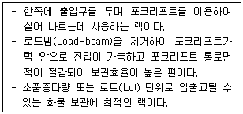
- 파렛트 랙(Pallet Rack)
- 적층 랙(Mezzanine Rack)
- 슬라이딩 랙(Sliding Rack)
- 모빌 랙(Mobile Rack)
- 드라이브인 랙(Drive-in Rack)
(정답률: 알수없음)
39. 포장기법에 관한 설명으로 옳지 않은 것은?
- 방수방습 포장은 각종 제품을 유통과정의 습도로부터 지키는 포장기법이다.
- 방청 포장은 금속표면의 녹이나 부식을 방지하기 위한 포장기법이며 일반적으로 방청제 도포나 가연성 플라스틱 도포가 사용된다.
- 가스치환 포장에는 주로 질소, 탄산가스 등의 가스가 사용되며 어태치먼트(Attachment)가 대표적인 주입장치이다.
- 중량물 포장은 주로 나무를 사용한 상자를 이용하며, 상자 포장설계기법을 KS규격으로 정비하여 보급한 결과 일정한 품질의 출하용기가 제작되고 있다.
- 위험물 포장은 고도의 안정성을 확보하기 위해 국제기준을 적용한 위험물의 표시와 표찰이 사용되고 있다.
(정답률: 알수없음)
40. 일관파렛트화의 장ㆍ단점에 관한 설명으로 옳지 않은 것은?
- 작업능률의 향상으로 인력이 절감된다.
- 넓은 작업공간 및 통로가 필요없다.
- 작업의 표준화, 기계화를 촉진한다.
- 제한된 공간을 최대한 이용할 수 있다.
- 파렛트 자체의 체적 및 중량만큼 적재량이 줄어든다.
(정답률: 알수없음)
2과목: 물류관련법규
41. 물류정책기본법령상 물류체계의 효율화에 관한 설명으로 옳은 것은?
- 국토교통부장관은 물류표준화를 위해 필요하다고 인정하는 경우 산업표준화법에 따른 한국산업표준을 개정할 수 있다.
- 산업통상자원부장관은 물류비 산정기준을 표준화하기 위하여 기업물류비 산정지침을 작성ㆍ고시하여야 한다.
- 산업통상자원부장관은 물류업무에 관한 표준전자 문서의 개발ㆍ보급계획을 수립하여야 한다.
- 국가물류통합정보센터운영자 또는 단위물류정보망 전담기관은 전자문서 및 정보처리장치의 파일에 기록되어 있는 물류정보를 2년 동안 보관하여야 한다.
- 국가물류통합정보센터운영자는 물류체계의 효율화를 위해 필요하다고 판단한 경우 관련 물류정보를 공개하여야 한다.
(정답률: 알수없음)
42. 물류정책기본법령상 물류계획의 수립 등에 관한 설명으로 옳은 것은?
- 국토교통부장관 및 해양수산부장관은 국가물류정책의 기본방향을 설정하는 10년 단위의 지역물류 기본계획을 5년마다 공동으로 수립한다.
- 국토교통부장관 및 해양수산부장관은 국가물류기본계획을 수립하거나 중요한 사항을 변경하려는 경우에는 국무회의의 심의를 거쳐야 한다.
- 국토교통부장관은 국가물류기본계획을 수립하거나 변경한 때에는 이를 관보에 고시하고, 관계 중앙행정기관의 장 및 시ㆍ도지사에게 통보하여야 한다.
- 국가물류기본계획은 국토기본법에 따라 수립된 국토종합계획 및 국가통합교통체계효율화법에 따라 수립된 국가기간교통망계획에 우선하며 그 계획의 기본이 된다.
- 국가물류기본계획을 시행하기 위하여 시ㆍ도지사는 연도별시행계획을 수립하여야 한다.
(정답률: 알수없음)
43. 물류정책기본법령상 국토교통부장관 또는 해양수산부장관이 물류현황조사에 필요한 자료의 제출을 요청하거나 그 일부에 대하여 직접 조사하도록 요청할 수 있는 자가 아닌 것은?
- 시장ㆍ군수 및 구청장
- 특별시장ㆍ광역시장ㆍ도지사 및 특별자치도지사
- 관계 중앙행정기관의 장
- 물류정책기본법에 따라 지원을 받는 기업ㆍ단체
- 물류기업
(정답률: 알수없음)
44. 물류정책기본법령상 물류산업의 경쟁력 강화에 관한 설명으로 옳지 않은 것은?
- 국토교통부장관은 화주기업이 제3자물류를 자가물류로 전환하도록 유도하기 위한 시책을 강구하여야 한다.
- 물류사업을 종합적ㆍ복합적으로 영위하는 자는 자신이 영위하는 물류사업을 관장하는 중앙행정기관의 장으로부터 종합물류기업인증을 받을 수 있다.
- 종합물류기업 인증센터에 대한 지도ㆍ감독권은 국토교통부장관이 가진다.
- 국토교통부장관 및 해양수산부장관은 물류사업에 관련된 분야의 전문인력을 양성하기 위하여 외국물류대학의 국내유치활동 지원사업을 할 수 있다.
- 국토교통부장관은 물류관리사를 고용한 물류관련사업자에 대하여 다른 사업자에 우선하여 행정적ㆍ재정적 지원을 할 수 있다.
(정답률: 알수없음)
45. 물류정책기본법령상 종합물류기업의 인증 등에 관한 설명으로 옳지 않은 것은?
- 화물운송업만을 3개 영위하는 자는 종합물류기업으로 인증을 받을 수 없다.
- 물류 관련 단체도 종합물류기업 인증센터로 지정될 수 있다.
- 국가는 인증종합물류기업이 물류시설을 확충하는 경우에는 다른 물류기업에 우선하여 소요자금의 일부를 융자할 수 있다.
- 국토교통부장관은 종합물류기업 인증센터로 하여금 종합물류기업 인증요건의 충족여부를 심사하게 할 수 없다.
- 인증종합물류기업에 대해서는 유통산업발전법상의 물류시설 우선입주대상자보다 우선하여 물류시설의 개발 및 운영에 관한 법률에 따른 복합물류터미널에 입주하게 할 수 있다.
(정답률: 알수없음)
46. 물류정책기본법령상 국제물류주선업에 관한 설명으로 옳은 것은?
- 국제물류주선업을 경영하려는 자는 국토교통부장관에게 등록하여야 한다.
- 법인이 국제물류주선업의 등록을 하려는 경우 6억원 이상의 자본금을 보유하여야 한다.
- 화물자동차 운수사업법을 위반하여 벌금형을 선고받고 2년이 지나지 아니한 자라도 국제물류주선업을 양도받을 수 있다.
- 국제물류주선업자인 법인이 합병 외의 사유로 해산하려는 경우에는 미리 국토교통부장관에게 신고하여야 한다.
- 국제물류주선업자가 국제물류주선업의 전부 또는 일부를 휴업하려는 경우에는 미리 국토교통부장관 및 산업통상자원부장관에게 각각 신고하여야 한다.
(정답률: 알수없음)
47. 물류정책기본법령상 국토교통부장관 및 해양수산부장관이 물류사업에 관련된 분야의 기능인력 및 전문인력을 양성하기 위하여 할 수 있는 사업에 해당하지 않는 것은?
- 화주기업 및 물류기업에 종사하는 물류인력의 역량 강화를 위한 교육ㆍ연수
- 국내물류기업의 해외진출 및 해외물류기업의 국내 투자유치 지원
- 국제물류 활성화를 위한 선진기법, 교육프로그램 및 교육교재의 개발ㆍ보급
- 물류시설의 운영과 물류장비의 조작을 담당하는 기능인력의 양성ㆍ교육
- 물류체계 효율화를 위한 선진기법, 교육프로그램 및 교육교재의 개발ㆍ보급
(정답률: 알수없음)
48. 물류정책기본법령상 물류의 선진화 및 국제화에 관한 설명으로 옳지 않은 것은?
- 국토교통부장관 및 해양수산부장관은 물류 활동에 관한 신기술을 진흥하기 위하여 물류기술정보를 체계적ㆍ종합적으로 관리ㆍ보급하는 방안을 강구하여야 한다.
- 국토교통부장관 및 해양수산부장관은 물류 관련기술의 진흥을 위하여 관련 연구기관 및 단체를 지도ㆍ육성하여야 한다.
- 국토교통부장관 및 해양수산부장관은 범정부차원의 지원이 필요한 국가간 물류협력체의 구성에 관하여는 미리 기획재정부장관 및 외교부장관과 협의하여야 한다.
- 국토교통부장관 및 해양수산부장관은 물류기업 및 화주기업에 대하여 환경친화적인 운송수단으로의 전환을 권고하고 지원할 수 있다.
- 국토교통부장관 및 해양수산부장관은 물류시설에 외국인투자기업 및 환적화물을 효과적으로 유치하기 위하여 필요한 경우 당해 물류시설관리자와 공동으로 투자유치 활동을 수행할 수 있다.
(정답률: 알수없음)
49. 물류시설의 개발 및 운영에 관한 법령상 물류단지 개발사업에 관한 설명으로 옳은 것은?
- 물류단지개발사업 시행자의 요청에 따라 전기간선시설을 땅 속에 설치하는 경우 그 설치비용은 시행자가 전부를 부담한다.
- 물류단지 안에 있는 국가 또는 지방자치단체 소유의 재산을 시행자에게 수의계약으로 매각하는 것은 허용되지 않는다.
- 국가 또는 지방자치단체는 물류단지개발사업에 필요한 비용 중 이주대책사업비는 보조하거나 융자할 수 없다.
- 시행자는 물류단지의 건설을 위하여 필요한 때에는 다른 사람의 토지를 일시 사용할 수 있으나 나무, 토석, 그 밖의 장애물을 변경하거나 제거할 수 없다.
- 물류단지개발실시계획에는 개발한 토지ㆍ시설 등의 처분에 관한 사항이 포함되어야 한다.
(정답률: 알수없음)
50. 물류시설의 개발 및 운영에 관한 법령상 물류단지시설에 해당하지 않는 것은? (단, 물류단지 안에 설치되는 시설에 한함)
- 식품산업진흥법에 따른 수산물가공업시설 중 냉동ㆍ냉장업 시설
- 항만법의 항만시설 중 항만구역 외에 있는 화물하역시설
- 자동차관리법에 따른 자동차경매장
- 철도사업법에 따른 철도사업자가 그 사업에 사용하는 화물운송ㆍ하역 및 보관 시설
- 항공법의 공항시설 중 공항구역에 있는 화물운송을 위한 시설과 그 부대시설 및 지원시설
(정답률: 알수없음)
51. 물류시설의 개발 및 운영에 관한 법령상 물류창고업에 관한 설명으로 옳지 않은 것은?
- 국토교통부장관은 우수업체로 인증된 물류창고업자가 인증기준을 적합하게 유지하는지에 대한 점검을 정당한 사유 없이 2회 거부한 경우 그 인증을 취소하여야 한다.
- 물류창고업자가 물류창고의 소재지를 변경하려는 경우에는 변경등록을 하여야 한다.
- 물류시설의 개발 및 운영에 관한 법률을 위반하여 벌금형 이상을 선고받은 후 2년이 지나지 아니한 자는 물류창고업을 등록할 수 없다.
- 물류창고업자가 그 사업의 전부 또는 일부를 휴업하거나 폐업하려는 때에는 미리 국토교통부장관에게 신고하여야 한다.
- 물류창고업 등록의 취소처분을 받은 후 2년이 지나지 아니한 자는 물류창고업의 등록에 따른 권리ㆍ의무를 승계할 수 없다.
(정답률: 알수없음)
52. 물류시설의 개발 및 운영에 관한 법령상 물류단지에 관한 설명으로 옳지 않은 것은?
- 100만 제곱미터를 초과하는 물류단지는 국토교통부장관이 지정한다.
- 관계 행정기관의 장은 물류단지의 지정이 필요하다고 인정하는 경우 대상지역을 정하여 물류단지지정권자에게 물류단지의 지정을 요청할 수 있다.
- 물류단지 안에서 건축물을 건축하려는 자는 시ㆍ도지사의 허가를 받아야 한다.
- 물류단지 안에서 재해복구에 필요한 응급조치를 위하여 하는 행위는 허가를 받지 아니하고 할 수 있다.
- 물류단지로 지정ㆍ고시된 날부터 5년 이내에 그 물류단지의 전부 또는 일부에 대하여 물류단지개발실시계획의 승인을 신청하지 아니하면 그 기간이 지난 다음날 해당 지역에 대한 물류단지의 지정이 해제된 것으로 본다.
(정답률: 알수없음)
53. 물류시설의 개발 및 운영에 관한 법령상 용어에 관한 설명으로 옳지 않은 것은?
- 물류의 공동화ㆍ자동화 및 정보화를 위한 시설은 물류시설에 해당한다.
- 철도사업법에 따른 철도사업자가 여객의 수하물 또는 소화물을 보관하는 것은 물류창고업에 해당하지 않는다.
- 유통산업발전법에 따른 집배송시설을 경영하는 사업은 물류터미널사업에 해당하지 않는다.
- 물류단지를 조성하기 위하여 시행하는 하수도, 폐기물처리시설의 건설사업은 물류단지개발사업에 해당하지 않는다.
- 물류단지 안에 설치된 물류단지의 종사자 및 이용자의 생활과 편의를 위한 시설은 지원시설에 해당한다.
(정답률: 알수없음)
54. 물류시설의 개발 및 운영에 관한 법령상 물류터미널사업자가 물류터미널 공사시행인가를 받은 공사계획의 변경인가를 받아야 하는 경우에 해당하지 않는 것은?
- 공사의 기간을 변경하는 경우
- 공사비의 10분의 1 이상을 변경하는 경우
- 물류터미널 부지 면적의 10분의 1 이상을 변경하는 경우
- 물류터미널 안의 건축물의 연면적 10분의 1 이상을 변경하는 경우
- 물류터미널 안의 공공시설 중 주차장, 상수도, 하수도, 유수지를 변경하는 경우
(정답률: 알수없음)
55. 물류시설개발 및 운영에 관한 법령상 물류단지개발사업에 따라 개발한 토지ㆍ시설 등을 물류단지 시설용지로 분양 또는 임대하는 경우 분양가격 및 임대료에 관한 설명으로 옳은 것은?
- 조성원가에 이주대책비, 판매비, 일반관리비는 포함되지 아니한다.
- 적정이윤은 조성원가에서 자본비용, 개발사업대행비용, 선수금을 포함한 금액의 100분의 5를 초과하지 아니하는 범위에서 시행자가 정한다.
- 시행자가 준공인가 전에 물류단지시설용지를 분양한 경우에는 해당 물류단지개발사업을 위하여 투입된 총사업비 및 적정이윤을 기준으로 준공인가 후에 분양가격을 정산할 수 있다.
- 대규모점포의 분양가격은 부동산 가격공시 및 감정평가에 관한 법률에 따른 표준지공시지가를 예정가격으로 하여 실시한 경쟁입찰에 따라 정하여야 한다.
- 최초의 임대료는 법령 규정에 따라 산정한 분양가격에 공급공고일 현재 계약기간 2년의 정기예금이자율을 곱한 금액으로 한다.
(정답률: 알수없음)
56. 물류시설의 개발 및 운영에 관한 법령상 물류단지개발 및 시행자에 관한 설명으로 옳은 것은?
- 물류단지지정권자가 시행자를 지정할 때에는 사업계획의 타당성 및 재원조달능력과 다른 법률에 따라 수립된 개발계획과의 관계 등을 고려하여야 한다.
- 지방자치단체는 물류단지개발사업의 시행자로 지정받을 수 없다.
- 시행자는 물류단지개발사업 중 용수시설의 건설을 지방자치단체에 위탁하여 시행할 수 없다.
- 지방자치단체가 물류단지의 원활한 개발을 위하여 우선적으로 설치를 지원하는 기반시설에는 도로, 녹지, 유수지 및 광장이 포함된다.
- 시행자는 물류정책분과위원회의 심의를 거쳐 시설물별 부담금을 감면할 수 있다.
(정답률: 알수없음)
57. 화물자동차 운수사업법령상 화물자동차 운송사업자에 관한 설명으로 옳지 않은 것은?
- 운송사업자가 화물자동차 운송사업의 허가를 받는 때에 표준약관의 사용에 동의하면 운송약관의 신고를 한 것으로 본다.
- 운송약관의 신고는 운송사업자가 하여야 하며 협회가 대리할 수 없다.
- 운송사업자의 손해배상책임과 관련하여 화물이 인도기한이 지난 후 3개월 이내에 인도되지 아니하면 그 화물은 멸실된 것으로 본다.
- 운송사업자는 둘 이상의 화물자동차 운송가맹점에 가입하여서는 아니 된다.
- 운송가맹점인 운송사업자는 자기가 가입한 운송가맹사업자에게 소속된 운송주선사업자로부터 직접화물운송을 주선받아서는 아니 된다.
(정답률: 알수없음)
58. 화물자동차 운수사업법령상 업무개시 명령에 관한 설명으로 옳지 않은 것은?
- 국토교통부장관은 운송사업자가 정당한 사유 없이 집단으로 화물운송을 거부하여 화물운송에 커다란 지장을 주어 국가경제에 매우 심각한 위기를 초래하거나 초래할 우려가 있다고 인정할 만한 상당한 이유가 있으면 그 운송사업자에게 업무개시 명령을 할 수 있다.
- 국토교통부장관은 운송사업자에게 업무개시를 명하려면 국무회의의 심의를 거쳐야 한다.
- 국토교통부장관은 업무개시를 명한 때에는 구체적이유 및 향후 대책을 국회의장에게 보고하여야 한다.
- 운송사업자는 정당한 사유 없이 업무개시 명령을 거부할 수 없다.
- 국토교통부장관은 운송사업자가 정당한 사유 없이 업무개시 명령을 이행하지 아니하는 경우 그 허가를 취소하거나 6개월 이내의 기간을 정하여 그 사업의 전부 또는 일부의 정지를 명령하거나 감차 조치를 명할 수 있다.
(정답률: 알수없음)
59. 화물자동차 운수사업법령상 국토교통부장관이 교통안전공단에 권한을 위탁한 사항이 아닌 것은?
- 운전적성에 대한 정밀검사의 시행
- 화물운송 종사자격증의 발급
- 화물자동차 운전자의 교통사고 및 교통법규 위반사항 제공요청 및 기록ㆍ관리
- 화물자동차 운전자의 인명사상사고 및 교통법규 위반사항 제공
- 과적 운행, 과로 운전, 과속 운전의 예방 등 안전한 수송을 위한 지도ㆍ계몽
(정답률: 알수없음)
60. 화물자동차 운수사업법령상 화물자동차 운전자의 연령ㆍ운전경력의 요건으로 ( )안에 들어갈 내용은?
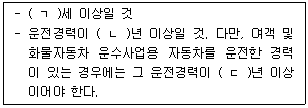
- ㄱ: 19, ㄴ: 3, ㄷ: 1
- ㄱ: 20, ㄴ: 5, ㄷ: 3
- ㄱ: 20, ㄴ: 3, ㄷ: 1
- ㄱ: 21, ㄴ: 5, ㄷ: 3
- ㄱ: 21, ㄴ: 3, ㄷ: 1
(정답률: 알수없음)
61. 화물자동차 운수사업법령상 화물자동차 운송주선 사업에 관한 설명으로 옳은 것은?
- 화물자동차 운송가맹사업의 허가를 받은 자라도 화물자동차 운송주선사업을 경영하기 위해서는 별도의 허가를 받아야 한다.
- 화물자동차 운송주선사업의 허가를 받은 자가 허가사항을 변경하려면 시ㆍ도지사에게 신고하여야 한다.
- 운송주선사업자가 자기 명의로 다른 사람에게 화물자동차 운송주선사업을 경영하게 하려는 경우에는 국토교통부장관의 허가를 받아야 한다.
- 운송가맹점인 운송주선사업자는 자기가 가입한 운송가맹사업자에게 소속된 운송가맹점에 대하여 화물운송을 주선하여서는 아니 된다.
- 화물자동차 운송주선사업을 양도ㆍ양수하려는 경우에는 양수인은 시ㆍ도지사의 인가를 받아야 한다.
(정답률: 알수없음)
62. 화물자동차 운수사업법령상 적재물배상보험 또는 공제에 가입하여야 하는 자를 모두 고른 것은?
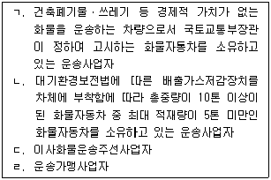
- ㄱ, ㄴ
- ㄱ, ㄷ
- ㄴ, ㄷ
- ㄴ, ㄹ
- ㄷ, ㄹ
(정답률: 알수없음)
63. 화물자동차 운수사업법령상 화물정보망에 관한 설명으로 옳지 않은 것은?
- 국토교통부장관은 운송서비스의 향상과 투명한 거래행위 확립을 촉진하기 위해 화물 및 차량에 대한 정보를 모범적으로 제공하고 있는 화물정보망에 대해 우수화물정보망으로 인증할 수 있다.
- 국토교통부장관은 인증정보망이 인증기준을 유지하는지에 대하여 점검할 수 있다.
- 화물운송거래의 투명화 및 서비스 개선 등에 적합할 것은 우수화물정보망의 인증기준에 해당하지 않는다.
- 운송주선사업자가 위ㆍ수탁차주에게 화물운송을 위탁하는 경우에는 운송가맹사업자의 화물정보망을 이용할 수 있다.
- 법인이 우수화물정보망의 인증을 신청한 경우 국토교통부장관은 전자정부법에 따른 행정정보의 공동이용을 통하여 법인 등기사항증명서를 확인하여야 한다.
(정답률: 알수없음)
64. 화물자동차 운수사업법령상 위반행위에 관한 ( )안의 과징금의 금액기준이 옳게 연결된 것은? (단, 과징금의 가감은 고려하지 않음) (단위: 만원)
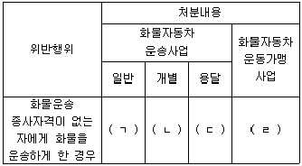
- ㄱ: 30, ㄴ: 30, ㄷ: 30, ㄹ: 30
- ㄱ: 60, ㄴ: 30, ㄷ: 30, ㄹ: 60
- ㄱ: 60, ㄴ: 30, ㄷ: 30, ㄹ: 90
- ㄱ: 60, ㄴ: 60, ㄷ: 60, ㄹ: 60
- ㄱ: 90, ㄴ: 60, ㄷ: 60, ㄹ: 90
(정답률: 알수없음)
65. 화물자동차 운수사업법령상 운송사업자(소유 대수가 2대 이상인 경우)의 직접운송의무에 관한 설명 중 ( )안에 들어갈 내용으로 옳은 것은?
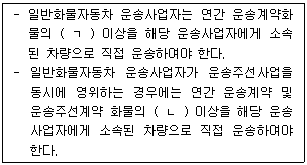
- ㄱ: 100분의 30 ㄴ: 100분의 30
- ㄱ: 100분의 30 ㄴ: 100분의 50
- ㄱ: 100분의 50 ㄴ: 100분의 30
- ㄱ: 100분의 50 ㄴ: 100분의 50
- ㄱ: 100분의 50 ㄴ: 100분의 80
(정답률: 알수없음)
66. 화물자동차 운수사업법령상 화물운송사업분쟁조정협의회의 심의ㆍ조정 사항에 해당하는 것을 모두 고른 것은?
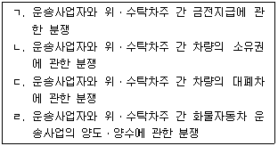
- ㄱ, ㄴ
- ㄴ, ㄷ
- ㄱ, ㄴ, ㄷ
- ㄴ, ㄷ, ㄹ
- ㄱ, ㄴ, ㄷ, ㄹ
(정답률: 알수없음)
67. 항만운송사업법령상 용어에 관한 설명으로 옳지 않은 것은?
- 항만운송사업이란 영리를 목적으로 항만운송을 하는 사업을 말한다.
- 검수란 선적화물을 싣거나 내릴 때 그 화물의 개수를 계산하거나 그 화물의 인도ㆍ인수를 증명하는 일을 말한다.
- 감정이란 선적화물 및 선박(부선을 포함한다)에 관련된 증명ㆍ조사ㆍ감정을 하는 일을 말한다.
- 검량이란 선적화물을 싣거나 내릴 때 그 화물의 용적 또는 중량을 계산하거나 증명하는 일을 말한다.
- 항만운송관련사업이란 항만에서 선박에 물품이나 역무를 제공하는 항만용역업ㆍ물품공급업ㆍ선박급유업 및 컨테이너수리업을 말한다.
(정답률: 알수없음)
68. 항만운송사업법령상 지방해양항만청장이 항만운송 관련사업자에 대하여 등록을 취소하여야 하는 경우를 모두 고른 것은?
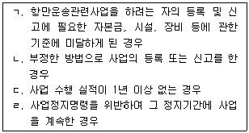
- ㄱ, ㄴ
- ㄱ, ㄷ
- ㄴ, ㄷ
- ㄴ, ㄹ
- ㄷ, ㄹ
(정답률: 알수없음)
69. 항만운송사업법령상 항만운송사업 및 항만운송관련사업에 관한 설명으로 옳지 않은 것은?
- 항만운송사업의 종류에는 항만하역사업, 검수사업, 감정사업, 검량사업이 있다.
- 선박에서 사용하는 맑은 물을 공급하는 행위를 하는 사업은 항만용역업에 해당한다.
- 항만하역사업의 등록을 한 자는 해양수산부령으로 정하는 바에 따라 운임과 요금을 정하여 해양수산부장관의 인가를 받아야 한다.
- 항만하역사업의 사업계획에는 연간 취급 건수 추정치가 포함되어야 한다.
- 항만운송사업 중 검수사업은 항만별로 등록한다.
(정답률: 알수없음)
70. 유통산업발전법령상 지방자치단체의 장이 자금지원을 할 수 있는 상점가진흥조합의 사업에 해당하지 않는 것은?
- 점포시설의 표준화 및 현대화
- 상품의 매매ㆍ보관ㆍ수송ㆍ검사 등을 위한 공동시설의 설치
- 조합원의 판매촉진을 위한 공동사업
- 조합원과 그 종사자의 자질향상을 위한 연수사업 및 정보제공
- 유통ㆍ물류정보시스템을 이용한 정보의 수집ㆍ가공ㆍ제공
(정답률: 알수없음)
71. 유통산업발전법령상 유통정보화시책에 관한 설명으로 옳지 않은 것은?
- 유통정보화시책에는 판매시점 정보관리시스템의 보급에 관한 사항이 포함되어야 한다.
- 유통정보화시책에는 유통ㆍ물류의 효율적 관리를 위한 무선주파수 인식시스템의 적용 및 실용화 촉진에 관한 사항이 포함되어야 한다.
- 산업통상자원부장관은 유통정보화시책 수립 시 필요하다고 인정하는 경우 미래창조과학부장관에게 유통정보화서비스를 제공하는 전기통신사업자에 관한 자료를 요청할 수 있다.
- 산업통상자원부장관이 다수의 유통ㆍ물류기업 간기업정보시스템의 연동을 위한 시스템의 구축 및 보급을 위한 시책을 시행하기 위해서는 미래창조과학부장관과 협의하여야 한다.
- 유통업자ㆍ제조업자 또는 유통관련단체가 상품의 전자적 거래를 위한 전자장터시스템을 구축 및 보급하는 사업을 추진하는 경우 산업통상자원부장관은 예산의 범위에서 필요한 자금을 지원할 수 있다.
(정답률: 알수없음)
72. 유통산업발전법령상 물류설비의 인증에 대한 산업통상자원부장관의 권한에 관한 내용으로 옳은 것은?
- 시ㆍ도지사 및 관계 중앙행정기관의 장과 협의하여 물류설비의 종류별로 표준이 되는 인증규격 및 인증기준을 정하여 고시할 수 있다.
- 인증물류설비의 이용 및 보급을 촉진하기 위하여 유통사업자가 인증물류설비와 관련한 연구개발투자사업을 하는 경우에는 예산의 범위에서 필요한 자금을 지원할 수 있다.
- 공공부문의 물류표준화를 촉진하기 위하여 공기업의 장에게 인증물류설비의 우선 구매를 명할 수 있다.
- 물류설비의 인증사업을 하는 경우에는 물류설비의 인증규격등과 관련된 성능을 시험ㆍ검사하는 물류설비인증기관을 지정할 수 있다.
- 물류설비성능검사기관이 정당한 사유 없이 성능검사업무를 하지 아니한 경우에는 그 지정을 취소하여야 한다.
(정답률: 알수없음)
73. 유통산업발전법령상 유통산업발전기본계획에 포함되어야 할 사항이 아닌 것은?
- 유통산업의 국내외 여건 변화 전망
- 유통산업의 종류별 발전 방안
- 산업별 유통기능의 고도화 방안
- 중소유통기업의 구조개선 방안
- 대규모점포의 규제 및 상호간 경쟁제한 방안
(정답률: 알수없음)
74. 유통산업발전법령상 청문을 필요로 하는 처분에 해당하지 않는 것은?
- 대규모점포 개설등록의 취소
- 전통상업보존구역 지정의 취소
- 지정유통연수기관의 취소
- 유통관리사 자격의 취소
- 공동집배송센터 지정의 취소
(정답률: 알수없음)
75. 철도사업법령상 우수 철도서비스 인증에 관한 설명으로 옳지 않은 것은?
- 공정거래위원회는 국토교통부장관과 협의하여 철도사업자 간 경쟁을 제한하지 아니하는 범위에서 철도서비스의 질적 향상을 촉진하기 위하여 우수철도서비스에 대한 인증을 할 수 있다.
- 인증을 받은 철도사업자는 우수서비스마크를 철도차량, 역 시설 또는 철도 용품 등에 붙이거나 인증 사실을 홍보할 수 있다.
- 인증을 받은 자가 아니면 우수서비스마크 또는 이와 유사한 표지를 철도차량, 역 시설 또는 철도 용품 등에 붙이거나 인증 사실을 홍보하여서는 아니 된다.
- 우수 철도서비스 인증을 받은 철도사업자의 철도서비스의 제공 및 관리실태가 미흡한 경우 국토교통부장관은 이의 시정ㆍ보완을 요구할 수 있다.
- 철도사업자의 신청에 의하여 우수 철도서비스 인증을 하는 경우에는 그에 소요되는 비용은 당해 철도사업자가 부담한다.
(정답률: 알수없음)
76. 철도사업법령상 철도사업자의 의무에 관한 설명으로 옳지 않은 것은?
- 철도사업자는 타인에게 자기의 성명 또는 상호를 사용하여 철도사업을 경영하게 하여서는 아니 된다.
- 철도사업자는 철도사업에 사용되는 철도차량에 철도사업자의 명칭을 표시하여야 한다.
- 철도사업자가 철도사업 외의 사업을 경영하는 경우 철도사업에 관한 회계와 철도사업 외의 사업에 관한 회계를 통합하여 경리하여야 한다.
- 철도사업자는 철도차량의 안전운행과 적정상태 유지에 필요한 점검ㆍ정비를 실시하여야 한다.
- 철도사업자는 국토교통부령으로 정하는 자격을 갖춘 사람을 철도차량의 점검ㆍ정비에 관한 책임자로 선임하여야 한다.
(정답률: 알수없음)
77. 철도사업법령상 과징금에 관한 설명으로 옳지 않은 것은?
- 사업정지처분에 갈음하여 부과되는 과징금의 총액은 1억원을 초과할 수 없다.
- 과징금은 이를 분할하여 납부할 수 있다.
- 국토교통부장관은 과징금 부과처분을 받은 자가 납부기한까지 과징금을 내지 아니하면 국세 체납처분의 예에 따라 징수한다.
- 징수한 과징금은 철도사업의 경영개선이나 그 밖에 철도사업의 발전을 위하여 필요한 사업에 사용할 수 있다.
- 국토교통부장관은 과징금으로 징수한 금액의 운용계획을 수립하여 시행하여야 한다.
(정답률: 알수없음)
78. 철도사업법령상 전용철도의 등록 등에 관한 설명으로 옳지 않은 것은?
- 전용철도를 운영하려는 자는 국토교통부령으로 정하는 바에 따라 전용철도의 건설ㆍ운전ㆍ보안 및 운송에 관한 사항이 포함된 운영계획서를 첨부하여 국토교통부장관에게 등록하여야 한다.
- 전용철도운영자가 그 운영의 전부 또는 일부를 휴업 또는 폐업한 경우에는 1개월 이내에 국토교통부장관에게 신고하여야 한다.
- 국토교통부장관은 등록기준을 적용할 때에 환경오염, 주변 여건 등 지역적 특성을 이유로 등록을 제한하거나 부담을 붙일 수 없다.
- 철도사업법에 따라 전용철도의 등록이 취소된 후 그 취소일부터 1년이 지나지 아니한 자는 전용철도를 등록할 수 없다.
- 전용철도의 운영을 양도ㆍ양수하려는 자는 국토교통부령으로 정하는 바에 따라 국토교통부장관에게 신고하여야 한다.
(정답률: 알수없음)
79. 농수산 유통 및 가격안정에 관한 법령상 유통기구 정비기본방침에 포함되어야 하는 사항이 아닌 것은?
- 도매시장ㆍ공판장 및 민영도매시장 시설의 바꿈 및 이전에 관한 사항
- 중도매인 및 경매사의 가격조작 방지에 관한 사항
- 생산자와 소비자 보호를 위한 유통기구의 봉사 경쟁체제의 확립과 유통 경로의 단축에 관한 사항
- 운영 실적이 부진하거나 휴업 중인 도매시장의 정비 및 도매시장법인이나 시장도매인의 교체에 관한 사항
- 도매상의 시설 개선에 관한 사항
(정답률: 알수없음)
80. 농수산 유통 및 가격안정에 관한 법령상 도매시장 개설자가 거래 관계자의 편익과 소비자 보호를 위해 이행하여야 하는 사항이 아닌 것은?
- 도매시장 시설의 정비ㆍ개선
- 농수산물의 가격안정을 위한 비축용 농수산물의 수매
- 경쟁촉진과 공정한 거래질서의 확립 및 환경 개선
- 상품성 향상을 위한 규격화, 포장개선 및 선도 유지의 촉진
- 도매시장 시설의 합리적인 관리
(정답률: 알수없음)